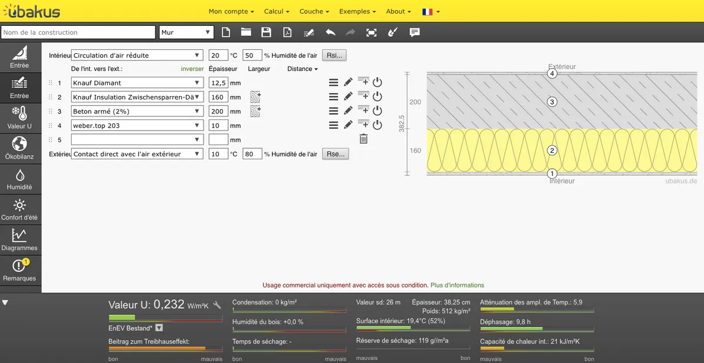
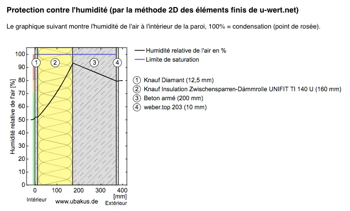
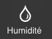
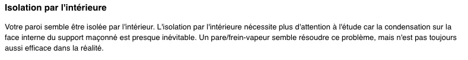

Qu'est ce que le point de rosée ?
Commençons par une explication scientifique : L’air froid contient moins d’humidité que l’air chaud.
Pendant l'hiver, le chauffage est en général allumé, la vapeur d'eau contenue dans l'air ambiant se diffuse donc à travers le mur extérieur. Lorsque la température de l'air devient inférieure ou égale à la température de rosée, la vapeur d'eau contenue dans l'air devient de la condensation : c'est le point de rosée !
Cette condensation peut arriver dans deux cas de figure :
- Au niveau d'un pont thermique : l'air rencontre un "point froid",
- Dans la paroi : au fur et à mesure que l'air se diffuse dans la paroi, sa température baisse jusqu'à atteindre le point de rosée.
La problématique des ponts thermiques étant traitée par les diverses réglementations thermiques, nous nous intéresserons ici au point de rosée dans une paroi.
Les propriétés thermiques des matériaux
Chaque matériau, qui compose notre paroi, possèdes des propriétés thermiques :
- La conductivité thermique : c'est la caractéristique principale d'un isolant,
- La résistance thermique R : dépend de l'épaisseur du matériau, calculée à partir de la conductivité thermique,
- Le facteur de diffusion de la vapeur d'eau : détermine la perméabilité d'un matériau,
- La capacité thermique massique c : correspond à la capacité thermique du matériau par rapport à sa masse.
Pas de panique, nous allons utiliser un outil numérique pour calculer le point de rosée : celui-ci présente un large choix de matériaux, avec leurs propriétés thermiques !
Le calcul du point de rosée
Pour déterminer s'il y a un point de rosée, donc de la condensation, nous utiliserons la calculette en ligne u-wert proposée par le site internet Allemand ubakus.de. N'hésitez pas à vous créer un compte pour pouvoir utiliser tous les matériaux disponibles, vous pouvez également ajouter vos propres matériaux.
Seul petit bémol, le site est en Allemand... mais propose une traduction en Français. Cependant, quelques mots ne sont pas traduits automatiquement, mais cela ne compromet pas l'utilisation de cet outil !
La calculette vous propose de décomposer votre paroi par matériau, en allant de l'intérieur vers l'extérieur. Pour chaque couche, vous devez renseigner le matériau (et ses propriétés thermiques) et son épaisseur.

Pour rendre le calcul le plus précis possible, il faut préciser la température et le pourcentage d'humidité de l'air (intérieur et extérieur).
Facile d'utilisation et très complet, le site internet Infoclimat vous permet de trouver ces valeurs selon votre localisation : par exemple.
Interprétation des résultats

Dans notre cas, l'humidité relative de l'air n'atteint pas les 100% : il n'y a donc pas de point de rosée dans cette paroi.
Toutefois, dans certains cas, le point de rosée est atteint. Ce n'est pas forcément inquiétant car la condensation peut s'évaporer naturellement, il est donc important de faire la différence entre :
- Un point de rosée "admissible" : lorsque son temps de séchage est inférieur à 90 jours,
- Un point de rosée "critique" : lorsque le temps de séchage est trop important et que la condensation peut amener la création de moisissure et d'autres désordres.
Pour retrouver cette information, vous utiliserez l'onglet Humidité de la calculette.

Lorsque la température extérieure est basse, le point de rosée semble inévitable, sur la face interne de la structure porteuse.
Cependant, il ne faut pas oublier que la température extérieure ne reste pas basse toute la journée, notamment grâce au rayonnement solaire : ce qui a pour effet de réduire le temps de séchage de la condensation.
Enfin, il est important de préciser que ces calculs ne sont que théoriques : la mise en place des matériaux sur chantier peut donc influer sur le calcul du point de rosée.
De même, des solutions permettent de réduire le point de rosée dans le calcul mais celles-ci peuvent cependant s'avérer moins efficaces sur chantier.
